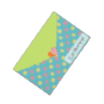
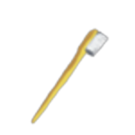
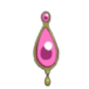
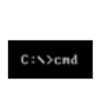
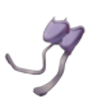
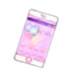
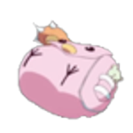
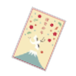

| Name | Image | Tier | Pool | Description | Flavor |
|---|
| Afternoon Tea | | Common | | Upon resting, gain 5Regen next combat. | There's no point in apologizing for who you are. You are a beautiful person. Please don't apologize for that. |
| Ill Gained Pizza | | Common | | Every time an enemy attacks you, gain 1Gold. | You have to obtain the pizza stealthily. If you don't, everyone will see you. And they will ask for a slice. Everyone wants a piece. Then you're left pizzaless in an unforgiving world. |
| Kosha Piece | | Common | | Right click during combat to activate. If you play 3Skills, then 3Attacks, then 1Skill, then 1Power, you can flee the combat. | I feel...a gambler's spirit emanating from you. |
| Letters to Her |  | Common | | Obtain a new Letter at every future non-boss chest. For every Letter, shuffle 1Letter card into your deck at the start of combat. | |
| Pancakes | | Common | | Upon pickup, heal 75% of your missing health. | I heard something about delicious pancakes... |
| Promise List | | Common | | Gain 1Strength for every Quest completed since this relic was picked up. | What denies you is an illusion...a curse put upon you by the Heartless. |
| Prussian Blue Paint |  | Common | | You can now smith Curses. Smithing a Curse removes it from your deck and upgrades a random card in your deck. | What's that word for when you know in your heart everything in the world is going to be all right? |
| 2 AM Donut | | Uncommon | | If you do not play any attacks, at the end of your turn gain 1Strength up to 4 times a combat. | KA KA KA |
| Bottled Love |  | Uncommon | | Upon pickup, choose a card. Upon taking damage, that card's damage is increased by 1 for the combat. | The world outside is filled with impurities. People I hate. People in my way. Liars. Dirty people. I need to exterminate all risks. |
| Gekota |  | Uncommon | Blue | Right click during combat to activate. Evoke an orb. | Biribiri. |
| Self Boiling Water |  | Uncommon | | Gain 1Strength at the start of combat for every charge on this relic. Gain a charge whenever you obtain a card, up to 3 . Lose all charges whenever you skip or remove a card. | I despise water that thinks that it boiled itself on its own. I despise seasons that think they cycle naturally. I despise the sun that thinks it rose on its own. Despise, despise, d-d-despise...I despise them. I despise you. |
| Toothbrush |  | Uncommon | | Gain 3 Max HP whenever you remove a card from your deck. | Get your head out of the gutter. |
| Weightless Krab |  | Uncommon | | For every 3 Curses you draw, gain 1 Intangible. | I am not a friend of justice. I am an enemy of evil. |
| Black Beret |  | Rare | | At the start of Elite combats, if you have less than 30% Max HP, gain 3Intangible. | Can you face your fears? |
| Orihime-Sama |  | Rare | | At the start of your turn, add a random card to your hand and make it Ethereal and Exhaust. | A Goddess from another time. She longs for her star crossed lover. |
| Pen Case |  | Rare | | You may now use 2CampfireOptions as long as neither option chosen is Rest. | That's the best part. |
| Quantum Physics Textbook |  | Rare | | You may now also select rooms connected to a randomly chosen room on the same level starting from the next floor. | Something something entanglement, something something teleportation. |
| Sword of Legend |  | Rare | | Upon entering a Rest Site, heal 3 HP for every monster room you entered since you picked this up or the last Rest Site you entered. | Nyanpasu! |
| Trompette | | Rare | | If you play only attacks in a combat, heal 10 HP. | You really do have an awful personality. |
| Victory Ruler |  | Rare | | Right click during combat to activate. Knock back an enemy into the one behind it, dealing 25% of its Max HP to both enemies. If there is no enemy behind your target, deal 2 damage. | The spirit of teamwork emanates from this ruler. You can feel the sacrifices it has made to make it this far. |
| Blue Soul Gem |  | Special | | Right click during combat to activate. Take no damage this combat and reduce your Max Health to 10. Cannot be used in boss combats. Can only be used 2 times. | I didn’t want this power so I could fight witches. I wanted it so I’d have the Strength to do what’s right and protect the ones I love. |
| Eternal Fortune |  | Special | | Upon pickup, raise your Max HP by 3. Occasionally run into more EternalFortune. | A favorite among Spire Dwellers. They grow everywhere and are said to bless any ascender with good luck. |
| Papillon Heart | | Special | | Every 4 turns, at the start of your turn, your entire hand is played at no cost. They target random enemies. | It is precisely because I cannot die, that I can say, I will always be by your side. |
| Pink Soul Gem |  | Special | | Right click during combat to activate. Deal damage equal to the charges on this relic and lose all charges. Gain charges equal to the damage you take. | If anyone ever tells me it’s a mistake to have hope, well then, I’ll just tell them they’re wrong. And I’ll keep telling them till they believe. |
| Purple Soul Gem |  | Special | | Right click during combat to activate. Restart the battle and all enemies gain 2Strength. | If…If it’s for your sake…I don’t mind being locked in this eternal maze. |
| Red Soul Gem |  | Special | | Right click during combat to activate. Gain 6Strength. You may no longer use Skills this combat. Can only be used on turn one | If you live for yourself you’ve only got yourself to blame. So I can’t really blame anyone else and I don’t have any regrets. |
| Shining Idol | | Special | | When you spend gold at a shop, Upgrade3 random cards. | Getting used to it would be quicker than trying to work around it somehow. |
| Simulated Spire |  | Special | | Obtain a SecondDeck that copies your starter deck. Upon ending combat, there will be an additionalcardreward you can add to your SecondDeck. At the start of combat, pick a deck to use. | Every day, I imagine a future where I can be with you. |
| Star Compass |  | Special | | Right click during combat to activate. Holds the deepest secrets of the Spire. Perhaps if you are worthy...? | A compass that always seems to point up no matter your orientation. Maybe it holds a dark secret. |
| Yellow Soul Gem |  | Special | | Right click during combat to activate. Deal 15damage to ALL enemies. Apply 99 Vulnerable to yourself. Can only be used once per combat and only up to 8 times overall. | If you’re not 100% sure why you’re doing it, you’ll most certainly regret it later. |
| Cat Face Cupcake | | Boss | | Gain [E] at the start of your turn. After the 3rd card played in a turn, all cards played will be removed from your deck and purged.YOUWILLNEVERSEETHISCARDAGAIN.BEVERYCAREFUL!! | It's just a better Velvet Choker. |
| Forbidden Bikini | | Boss | | Gain [E] at the start of your turn. You can no longer interact with merchants. | Don’t go about doing weird things while thinking about me. |
| Heavy Snek | | Boss | | Add 2 random Curses to the bottom of your draw pile at the start of combat. Every time you smith a card, upgrade 3 more random cards. | I only want one thing. Everything. Everything. Everything. Everything. Everything. Everything. Everything. Everything. Everything. Everything. |
| Incomplete Encyclopedia |  | Boss | | Gain [E] at the start of your turn. You can no longer see healthbars. | I don't know everything. I only know what I know. |
| Love Arrow |  | Boss | | Right click during combat to activate. Target an enemy. Every enemy between you and it becomes Surrounded until the targeted enemy dies. The targeted enemy deals 50% more damage. Canonlybeusedoncepercombat. | LOVE ARROW SHOOT |
| Monkei's Paw |  | Boss | | Whenever you play a card, add 2 copies of it to your discard pile at half power (rounded down) | Upon closer inspection, this isn't a monkey's paw at all. |
| Pink Allygator Plush | | Boss | | Lose 2 HP at the start of every turn. If you die, heal to full and kill all enemies. Can only be used once and stops doing damage once used. | Everyone is waiting to die if you think about it...Some just have longer to wait than others. |
| Platinum Phoenix |  | Boss | | At the start of your turn, gain [E] [E] . You can only play 1 cost cards. | I'm platinum mad at you! |
| Prosthetics |  | Boss | | Upon pickup, lose 35 Max HP. When receiving a debuff, negate it, and if the source was a monster, apply the debuff to it instead. | Keep moving! If you're alive you can keep moving, dammit! |
| Risk |  | Boss | | Upon pickup lose [E] . Play the first 2 Attacks or Skills you play each turn twice. If you play an Attack or Skill, you cannot play the other type in the same turn. | The oldest game known to man, upon which the fate of nations has been known to rest: Rock, Paper, Scissors. |
| Smart Phone |  | Boss | | Gain [E] at the start of your turn. On Card Rewards, one of the choices will randomly be selected. If you do not pick that choice, take 10% of your Max HP as damage. | If I don't respond quickly, everyone will leave me behind...! |
| Yufonium |  | Boss | | Every attack you draw has its cost lowered by 1. Deal half damage with attacks. You can only play up to 20 cards a turn. | Don't give up. Not until you've done everything in your power! |
| Bottled Happiness |  | Shop | | Upon pickup, choose a card. It will Exhaust on draw. At the end of combat, bottle an additional card. | Get out of my head. Get out of my head. Get out of my head. Get out of my head. Get out of my head. Get out of my head. Get out of my head. Get out of my head. Get out of my head. Get out of my head. Get out of my head. Get out of my head. Get out of my head. Get out of my head. Get out of my head. Get out of my head. Get out of my head. Get out of my head. Get out of my head. Get out of my head. Get out of my head. Get out of my head. Get out of my head. Get out of my head. Get out of my head. Get out of my head. |
| Convergence |  | Shop | | Reset your health, deck, gold, and relics to as they were at the start of the act. Generate a new version of the current act and start from the beginning. Lose 20 Max HP. | I will never lose, not to you, nor to fate! That is my choice. |
| Diary | | Shop | | Upon pick up, pick the boss of the act. | DESTIIIIIIIIIIIIIIIINY |
| Jellyphish |  | Shop | | I'm honestly not sure what this does. | People are like jellyphish to me. I don't understand. |
| Komachan | | Shop | | Right click to activate. The next room you can go to, other than bosses, becomes a Rest Site. Can only be used once. | Koma-chan always said to be prepared! |
| No Longer Lost Snayl |  | Shop | | Upon entering a ? room, there is a 40 % all connected rooms become a ? room. | I'm sure there's a reason that, even after I stopped being lost, I stayed here. I won't leave until I know what that reason is. |
| Nonexistent Mirror |  | Shop | | The next 2 times you obtain a card, obtain a copy of it. | "I saw a strange man outside of Kanbaru's house today." NL "When did they hang up a mirror?" |
| Peace Piece | | Shop | | Every 3 turns, at the start of your turn, you and all enemies take no damage until the next turn. | "Peace Peace" I said with a posed look. |
| Sosunser |  | Shop | | If you play 8Attacks in one turn, play all 8Attacks again. | ORAORAORAORAORAORAORAORAORA |
| Thesaurus | | Shop | | Upon pickup, pick a non-special relic. Transform it into a relic of the same rarity. | |
| Traffic Light | | Shop | | Right click during combat to activate.GreenMode: Gain 2Strength until the end of the turn for every card you play and 1Frail for every card you play. RedMode: Gain 1Dexterity until the end of the turn for every card you play and 1Weak for every card you play. Currently in RedMode. | When the world is filled with red lights, signalling danger, the world is safer than usual. But when it's filled with green lights signalling safety, it creates a place more dangerous than any other. |
{kind=link}